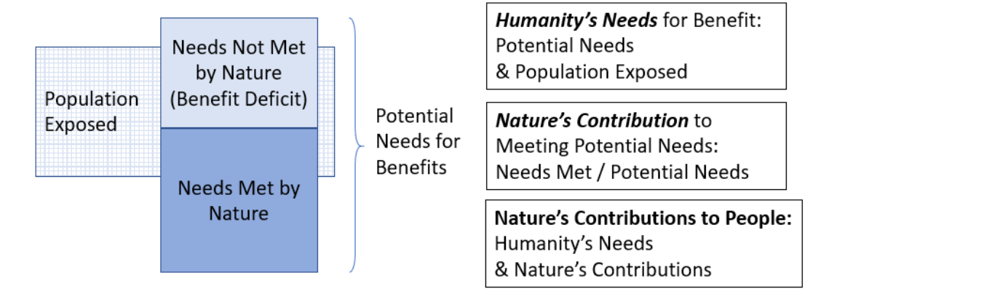
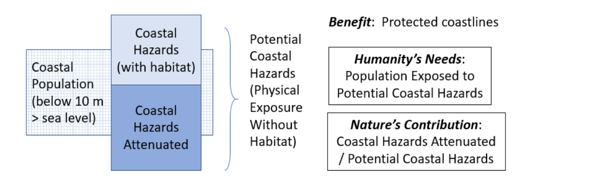

Coastal habitats such as coral reefs, mangroves or sea grass protect the shorelines from the impacts of storms, such as floods and erosion.
This framework for assessing Nature’s Contributions to People (NCP), is based on:

The potential human need for coastal protection is the physical exposure to coastal storms (based on wind, waves, sea level rise, geomorphology, etc) in the absence of coastal habitat like coral reefs or mangroves. People living either nearest to the shoreline or between 0 and 10 m above sea level are considered to be the population exposed, since these are the people most susceptible to flooding, especially with sea level rise. The need met by nature is the attenuation of that storm surge, and nature’s (biophysical) contribution is the proportion of that coastal storm risk reduced by ecosystems.

We examine changes in these individual components of the NCP, from current (2015) conditions to future (2050) scenarios. To imagine cohesive futures, climate scientists have developped the the Shared Socio-economic Pathways (SSPs) (Rosa, 2017). Widely used by the climate research community (IPCC, IPBES...), these narratives for future trajectories in land-use, climate and population change. We considered 3 scenarios:
The Sustainability scenario, (SSP1 paired with RCP 2.6) depicts a "Greener" world shifting gradually toward a more sustainable path, emphasizing more inclusive development (reducing inequalities) and respect of the environment.
The Regional Rivalry scenario (SSP3 paired with RCP 6.0) forecast resurgent nationalism, where countries are concerned about competitiveness and security, there are conflicts. Economic development is slow, education and tech investments declines, inequalities worsen. Climate change is intense and there is strong environmental degradation in some regions.
The Fossil-Fueled Development (SSP5 paired with RCP 8.5) depicts a world where humanity takes the capitalist highway, with high faith in competitive markets, innovation and participatory societies. This world is more and more globalized, with big investments in health, education, and socio-economic development in general. However, this happens with vast exploitation of abundant fossil fuel resources and very consumerist lifestyles, geo-engineering is viewed as the solution.
To estimate Nature’s Contribution to People (NCP) in terms of coastal protection, specifically attenuation of storm surge and related risks, exposure to coastal risk is assessed through a ranked index based on a variety of different physical factors determining the exposure of a piece of coastline to storm surge, and the contribution of coastal habitats (such as coral reefs, mangroves, sea grass and saltmarsh) to mitigating that risk is considered in terms of the difference in coastal risk with and without that habitat present. Our model for the contribution of coastal habitat to storm surge mitigation is based on the variant of the InVEST Coastal Vulnerability model (Arkema, 2013), which produces a qualitative index of coastal exposure to erosion and inundation in the range of 1 (lowest risk) to 5 (highest risk). Coastal exposure is estimated as the geometric mean of individual risk indices calculated from six bio-geophysical variables: natural habitats, sea level change, wind exposure, wave exposure, relief, and surge potential depth contour.
We use these outputs along with populations along coastlines and living less than 10 meters above sea level to determine humanity’s needs and nature’s contributions, as the dual components of NCP
All data displayed is publicly available here
Full methods will be available upon publication, in the Supplementary information of Chaplin-Kramer (in review).